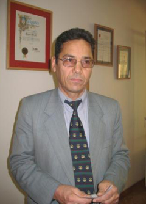

پذيرش > تریبون > گفت و گو > عبدالفتاح سلطانی : برخورد سخت افزاری با فعالان جامعه مدنی نشانه کم تحملی (...)


 عبدالفتاح سلطانی : برخورد سخت افزاری با فعالان جامعه مدنی نشانه کم تحملی است عبدالفتاح سلطانی : برخورد سخت افزاری با فعالان جامعه مدنی نشانه کم تحملی است
1 آذر 1386 - آيدا سعادت - نسخه قابل چاپ
عبدالفتاح سلطاني: "دستگيري خانم مريم حسين خواه مي تواند از مصاديق توقيف غير قانوني تلقي گردد"
اخيرا شاهديم كه دستگاه قضايي و امنيتي دربرابر حرکت مسالمت آمیز و حق طلبانه زنان اقدامات بازدارنده زیادی انجام می دهد. صدور و اجرای احکام ناعادلانه علیه فعالان جنبش حقوقی زنان با این اتهام که آنان امنیت ملی رابه خطر انداخته اند و قصد براندازی دارند از جمله ي این اقدامات است. طی یک سال اخير حركت هاي زنان با تهدید فراوان رو به رو بوده است. برخوردهاي صورت گرفته از تهدید و اخطار وتوبیخ به خاطر شرکت در تجمع مسالمت آمیز دراعتراض به قوانین تبعیض آمیز و احضار و بازداشت برای جمع آوری امضا، يا برگزاری جلسات آموزش حقوقی در خانه ها، تا صدور احکام سنگین برای فعالان جنبش زنان برای ممانعت ازبرگزاری تجمعات مسالمت آمیز (از جمله برای دلارم علی) و اتهام زنی به عنوان نشر اکاذیب و تبلیغ علیه نظام برای ممانعت از فعالیت مطبوعاتی و رسانه ای برای فعالان کمپین (از جمله بازداشت مریم حسین خواه). آنچه می خوانید پرسش و پاسخی است با عبدالفتاح سلطانی حقوق دان و از وکلای کانون مدافعان حقق بشر در این باره .

ایدا سعادت :از منظرحقوقی آیا صدور این احکام ادله حقوقی دارد و اگر نه مسئولان ما چه هدفی را دنبال می کنند ؟ چه راهکارهای قانونی و مسالمت آمیزي را می توان در برابر این اقدامات درپیش گرفت؟ این اقدامات چه تبعاتی برای فعالیت های مدنی مسالمت آمیز دارد؟ و فعالان اجتماعی، سیاسی و حقوقی آیا نباید دربرابر این موجی که همه فعالان اجتماعی را نشانه گرفته است اقدامی گسترده و جمعی انجام دهند؟
عبدالفتاح سلطانی: به طور كلي فصل سوم قانون اساسي و مقدمه قانون اساسي به صراحت حق آزادي بيان و عقيده را مجاز شمرده است. طبق اصل 8 قانون اساسي از ديدگاه شرعي مردم نه فقط حق بلكه تكليف دارند كه دولتمردان را نصيحت كنند و از آنها بخواهند كه از رفتارهاي ناشايست دست بردارند.
از طرفي با توجه به ميثاق بين المللي حقوق مدني و سياسي كه قبل از انقلاب به امضاي دولت ايران رسيده و به موجب ماده 9 قانون مدني، در كليه ميثاق هايي كه بسياري از آنها به امضاي دولت ما هم رسيده اند، حق آزادي بيان و عقيده به عنوان يكي از حقوق اساسي انسان ها در عرف بين المللي شناخته شده است. لذا هر كسي كه ساكن ايران باشد اگر بخواهد به طور مسالمت آميز حقوق اساسي خود را مطالبه كند يا از مسئولين حكومتي بخواهد كه قوانين تبعيض آميز را تغيير دهند يا اصلاح كنند اين اقدامات نمي تواند جنبه ي مجرمانه داشته باشند. به سخن ديگر نفس مطالبه ي حق اگر توأم با شورش يا تخريب يا ايجاد مزاحمت براي ديگران نباشد نه فقط عمل مجرمانه تلقي نمي شود بلكه هر مقامي كه مانع استيفاي اين حقوق شود عمل آن مقام مجرمانه تلقي ميگردد. زيرا طبق ماده 570 قانون مجازات اسلامي قضات و مقامات رسمي حق ندارند آحاد ملت را از حقوق اساسي آنها كه مندرج در قانون اساسي هم هست محروم كنند.
در قضيه مورد بحث يعني دستگيري و بازداشت خانم مريم حسين خواه به نظر اينجانب نه تنها ايشان مرتكب جرم نشده اند بلكه كساني كه ايشان را دستگير كرده اند عملشان مجرمانه است. يعني دستگيري او مي تواند از مصاديق توقيف غير قانوني تلقي گردد. لازم به توضيح است كه وقتي سخن از آزادي عقيده و بيان مطرح مي شود بديهي است كه در هيچ حكومتي حتا از نوع مستبد ترين آنها، موافقين حكومت هرگز در بيان عقيده با مشكل مواجه نشده و نمي شوند و همواره منتقدين مسئولين حكومتي يا مخالفين هستند كه در جوامع مختلف در معرض تهديد و زندان قرار مي گيرند و به همين دليل هر جا كه در قانون اساسي سخن از آزادي عقيده و بيان و آزادي انتقاد مطرح شده است عقلا بايد در مرحلهي اول اين اصل را به عنوان حق منتقدين حاكميت و مخالفين حكومت تلقي نمود. به همين دليل هر حكومتي كه ادعاي مردمي بودن را دارد بايد راهكار آزادي عقيده و اظهار نظر را عملا براي مردم فراهم نمايد و از ابراز مطالبات به حق مردم وحشت به خود راه ندهد . در غير اين صورت نمي توان حكومتي را كه با منتقدان خود با خشونت رفتار كند را دموكراتيك يا مردمي دانست.
سعادت :يكي از مواردي كه در اتهامات خانم حسين خواه ذكر شده است فعاليت ايشان در سايت اينترنتي زنستان و تغيير براي برابري است. چند روز پيش دادسرای اتاق اینترنت وزارت ارشاد با اخطار به شرکت هایی که هاست و دومین زنستان از آنها خریداری شده بود و احضار مسئولان این شرکت ها از آنها خواست که فضای اینترنتی فروخته شده به زنستان را مسدود کنند. آيا فعاليت در حوزه ي رسانه اي با محوريت خواست برابري خواهانه ي زنان مي تواند مصداق ارتكاب جرم و يا صدور حكم زندان و يا صدور وثايق سنگين تلقي گردد؟
سلطانی : يكي از ابزارهاي ابراز عقيده رسانه هاي گروهي هستند كه از اين طريق افراد جامعه مي توانند عقايد و نظراتشان را به سمع و نظر ديگران برسانند . بديهي است كه كار مطبوعات و كار رسانه اي هميشه همراه با درصدي از خطا بوده و هست چرا كه اقتضاي كار رسانه اي اين است كه ممكن است مطلب يا خبري را منعكس كند كه به طور دقيق با واقعيت ها منطبق نباشد و به همين دليل در اصل 168 قانون اساسي داوري در خصوص جرايم مطبوعاتي را بر عهده ي هيأت منصفه قرار داده اند. يعني نمايندگان افكار عمومي هر جامعه هستند كه تشخيص مي دهند كه آيا مسئولين اين رسانه ها مرتكب خطا يا جرم شده اند يا خير و حتا به فرض اين كه به لحاظ غفلت يك يا چند نفر از كاركنان هر يك از رسانه ها تخلفي صورت بگيرد به حكم عقل نبايد فوراً حكم به مسدود شدن يا توقيف آن صادر كرد. چرا كه توقيف مطبوعات يا رسانههاي گروهي در واقع صدور حكم به اشد مجازات براي آن رسانه است و مي توان آن را با حكم اعدام اشخاص حقيقي مقايسه نمود . به سخن ديگر حتا به فرض اين كه خطايي از ناحيه ي رسانه ها صادر شود قضات خردمند ودلسوز جامعه سعي ميكنند با تعيين مجازات هايي از قبيل جزاي نقدي به حداقل مجازات اكتفا نموده و جامعه را از وجود رسانه ها محروم نكنند به ويژه آن كه توقيف هر رسانه موجبات بيكاري عده ي كثيري از دست اندر كاران و فعالين اين حوزه را فراهم خواهد آورد.
سعادت : شواهد نشان از آن دارد كه برخورد با زنان از طرف دستگاه قضايي وارد فاز جديدي شده است. به عنوان نمونه مي توان از صدور حكم زندان براي خانم دلارام علي كه با دستور مقام ارشد قوه ي قضائيه موقتاً متوقف شده است و يا بازداشت خانم ها روناك صفا زاده و هانا عبدي و همچنين بازداشت غير منتظره ي خانم مريم حسين خواه و انتقال ايشان به بند عمومي ياد كرد.. به نظر مي رسد احكام صادره به مثابه ي شيوه اي جديد از سوي مسئولان نهادهاي امنيتي وقضايي و به منظور ممانعت و يا ايجاد محدوديت در حوزه ي فعاليت زنان با جديت پيگيري مي شود. آيا اصولا چنين احكامي نافي آزادي فعاليت مدني و حقوق شهروندي فعالين جنبش زنان نيست؟
سلطانی : به نظر مي رسد كه دولت نهم همانطور كه در حوزه ي دانشجويي برخورد سخت افزاري در پيش گرفته است و فضا را براي فعالين دانشجويي تنگ كرده در ساير حوزه ها تاب هيچگونه فعاليت حقوق بشري يا مدني را ندارد و آنچنان در حيطه ي عمل خود را كم ظرفيت جلوه داده كه با اندك انتقاد يا مطرح كردن خواسته هاي حداقلي توسط فعالين حقوق بشر يا تلاشگران مدافع برابري زنان و مردان برخورد هاي شديد و عكس العمل هاي خشونت آميزي از خود نشان مي دهد.
براي فعالين اجتماعي حوزه ي فعاليت و نشاط اجتماعي به قدري تنگ شده است كه به جرأت مي توان گفت كمتر روزنامه اي اين خطر را بر خود هموار مي سازد كه سخني از منتقدين دولت نهم را درج كند و اين علائم نشانگر ضعف و درماندگي دولت نهم است.
سعادت : چندماهی است که لایحه ای هم با عنوان حمایت خانواده از سوی دولت مطرح شده و با وجود مخالفت های گسترده با این لایحه (حتی اعلام برگزاری تجمع مسالمت آمیز در صورت طرح آن در صحن علنی مجلس از سوی خانم شیرین عبادی و دو هزار امضا کننده معترض به لایحه) گویا مجلس کنونی در تلاش برای تصویب آن است. آیا به نظر شما بین طرح این لایحه و فشار بر فعالان کمپین یک میلیون امضا ارتباطی وجود دارد و بسياري معتقدند که این لایحه در برابر کمپین مطرح شد؟
سلطانی : نمايندگان مجلس اصولاً بايد به دونكته توجه داشته باشند كه اگر هرچه را كه تصويب ميكنند با ضوابط حقوق بشري كه مندرج در هم اعلاميه حقوق بشر و هم در ميثاقين يعني ميثاق بين المللي حقوق مدني سياسي و نيز ميثاق حقوق اقتصادي فرهنگي و اجتماعي مغايرت دارد قطعاً عمل خلاف قانون و عرف بينالمللي انجام داده اند و در شان يك نمايندهي مجلس نيست كه بخواهند مصوباتي را تصويب كنند كه با ضوابط حقوق بين الملل كه ايران متعهد به اجراي آن هست مخالفتي داشته باشد. مطلب بعد اين كه در جامعه اي كه ما مي دانيم فرهنگ مرد سالاري حاكم بوده است به تدريج بايد اين فرهنگ زدوده شود. پس كساني كه در مسند خانه ملت قرار گرفتند و به عنوان نماينده ملت مي خواهند از زبان مردم سخن بگويند ميدانند كه اگر بخواهند مصوبه اي را بگذرانند كه در آن به نحوي تبعيض بين زنان و مردان را پذيرفته باشند با واكنش دو گروه و فشار آنان مواجه خواهند شد:
يكي اينكه همين اشخاص با مقابله ي همسران خود در منازلشان مواجه خواهند شد، دوم اين كه اين اشخاص مي خواهند در انتخابات بعدي از همين مردم راي بگيرند و به عنوان نمايندهي مجلس از حقوق آنان دفاع كنند. نيمي از جامعه زنان هستند و زنان قطعا به كساني راي نخواهند داد كه اين اشخاص بروند به مجلس و مصوبات و مقرراتي را بگذرانند كه فرهنگ تبعيض آميزي كه وجود دارد را تقويت كند و يا مصوباتي را تصويب كند كه حقوق زنان را تضيعف كند.
من يقين دارم كه عدهي زيادي از نمايندگان مجلس آنقدر توجه دارند كه حداقل به ضرر منافع خودشان اقدامي نكنند كه در انتخابات بعدي با رويكرد عدم تمايل زنان به حمايت از آنان و راي دادن به آنها مواجه شوند . اميدواريم كه آنقدر توجه داشته باشند كه با چنين مصوباتي برخورد كنند و من بعيد مي دانم كه اين مصوبه در صحن علني مجلس راي بياورد .
سعادت: سپاسگزارم
ارسال به
بالاترین
،
توییتر
،
فریندفید
،
فیسبوک
در همين بخش :
 دهمین دورۀ مراسم تندیس صدیقه دولت آبادی ۱۳۹۲ دهمین دورۀ مراسم تندیس صدیقه دولت آبادی ۱۳۹۲
کارت پستالهایی به بهانهی هشت مارس و به یاد همهی مبارزین راه برابری
بیانیه بیش از 350 تن از مدافعان حقوق زنان به مناسبت روز جهانی زن؛ زنان هر روز فرودستتر میشوند
لباسی که برای تن ما دوخته اند! /اعظم بهرامی
چالشها و چشمانداز فعالیت مدنی زنان
ديگر بخش ها :
طرح یک میلیون امضا
|
مقالات
|
سایت نوشته ها
|
اخبار
|
گزارش كمپين
|
گفت و گو
|
علیه سکوت
|
كوچه به كوچه
|
نامه های شما
|
گزارش ویژه
|
گفتگو با اعضا
|
ویژه سالگرد کمپین
|
تصویر برابری
|
دل آرام علی
|
تریبون
|
مقالات
|
تاریخ شفاهی
|
خارج از چارچوب
|
کتابخانه
|
درباره کمپین
|
کمپین در شهرها
|
کمپین در بند
|
صدای تغییر
|
ویژه 22 خرداد
|
لایحه حمایت از خانواده
|
گالری
|
عشا مومنی
|
امیر یعقوبعلی
|
خدیجه مقدم
|
راحله عسگری زاده و نسیم خسروی
|
پروین اردلان،جلوه جواهری، مریم حسین خواه، ناهید کشاورز
|
زینب پیغمبرزاده
|
سعیده امین، سارا ایمانیان، محبوبه حسین زاده، ناهید کشاورز و همایون نامی
|
احترام شادفر
|
نسیم سرابندی زاده،فاطمه دهدشتی
|
وبلاگ مهمان
|
پرونده خرم آباد
|
دستگیری ها
|
مریم مالک
|
پرستو اللهیاری
|
مهرنوش اعتمادی
|
سمیه رشیدی
|
Other Languages
|
همراهان
|
«فراخوان کمپین ده روز با بهاره هدایت»
| English
|